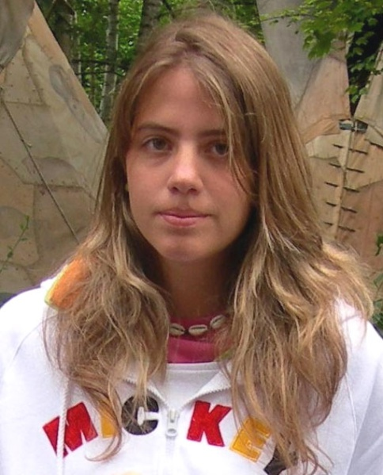

<DOCTYPE html>

  <head>
    <meta charset="utf-8">
    <title> EL caso alcasser </title>
  </head>

<p></img><p>

<style>


/*Colocamos una imagen de fondo al 'body' de nuestras páginas*/

body {  
  
  background-color: #777; 
}


/*Creamos la clase 'center' de forma que podamos centrar, por ejemplo, las tablas de nuestras páginas*/

.center{

	margin-left: auto;
	margin-right: auto;
}


/*Le damos formato a los encabezados H1*/
h1 {
  font-weight: bold;
  text-align: center;   
  font-family: Monaco, "Bitstream Vera Sans Mono", "Lucida Console", Terminal, monospace;
  color: #fff;
  
}

h2 {

  font-weight: bold;
  text-align: left;  
  font-family: Monaco, "Bitstream Vera Sans Mono", "Lucida Console", Terminal, monospace;
  color: white 	;

}

p, ul {

  font-family: Verdana, Helvetica, sans-serif;
  color: #fff;
  font-size: 12px; 

}


/*Le damos formato a los pies de imagen*/
figcaption {

  text-align: center;
}


/*Le damos formato a las imágenes*/
img {
  
  display: block;
  width: 50px;
  height: 50px;
  width: 100%;

}

</style>


<table border = '10' class= 'center' >  

<tr>
	<td><a href = 'html/casa.html'> <figcaption> Casa </figcaptaion></a></td>
                
	
           
        <td><a href = 'html/fania.html'> <figcaptaion> Fania</figcaptation></a></td>
	
 	<td><a href = 'html/maddeleine.html'>  <figacaptation> Maddeleine</figcaptation></a></td>
	
</tr>

<tr> 
	 <td><a href = 'html/mariluz.html'> <figcatation> Mariluz</figcaptation></a></td>

	 <td><a href = 'html/martadelcastillo.html'> <figcaptation> Martadelcastillo</figcaptation></a></td>
	
       	 <td><a href = 'html/pogo.html'> <figcaptation> Pogo</figcaptation></a></td>
               
</tr>
</html>
<h1> Alcasser <h1>
<body>	
<h2> Las adolescentes desaparecieron la noche del viernes 13 de noviembre de 1992, cuando se dirigían haciendo autoestop a una discoteca de la vecina localidad de Picasent donde se celebraba una fiesta de su instituto. La búsqueda de las conocidas como «niñas de Alcácer» tuvo una fuerte repercusión en los medios de comunicación españoles. El 27 de enero de 1993, setenta y cinco días después de su desaparición, dos apicultores encontraron los cadáveres semienterrados en una fosa en el barranco de la Romana, un paraje de difícil acceso próximo al pantano de Tous. El hallazgo de los cuerpos y el conocimiento posterior de las vejaciones a las que fueron sometidas conmocionaron profundamente a la sociedad.Las investigaciones policiales apuntaron a que el triple crimen fue cometido por dos delincuentes comunes: Antonio Anglés y Miguel Ricart, de 26 y 23 años respectivamente. El primero, considerado el presunto autor material de los hechos, huyó en el mismo momento en el que las fuerzas de seguridad procedieron a su localización. Aunque la búsqueda fue incesante, Antonio Anglés aún se encuentra en paradero desconocido. En cambio, Miguel Ricart fue detenido, juzgado y condenado a 170 años de prisión en un juicio muy mediatizado, de los que solo cumplió 21 antes de ser puesto en libertad en aplicación de la doctrina Parot.

La instrucción del caso fue duramente cuestionada por uno de los padres de las niñas que, de manera alternativa, desarrolló una teoría de conspiración. Según esta, la versión oficial era una tapadera para encubrir a los verdaderos criminales: un grupo de políticos y empresarios poderosos involucrados en la producción de vídeos snuff. Aunque buena parte de la teoría se sustentaba en especulaciones y acusaciones infundadas (algunas de ellas delictivas), esta arraigó con fuerza en el imaginario colectivo de la sociedad española gracias a su intensa exposición mediática. </h2> 	
